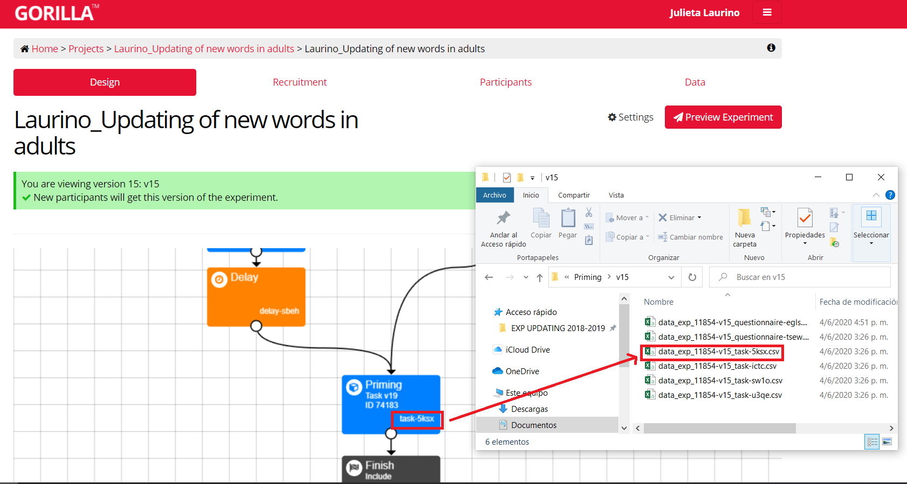

Te recomiendo que descargues los archivos de gorilla en formato csv. Si son muchos datos el formato excel va a tardar y hasta puede tirar error. Para saber a qué tarea corresponde cada archivo tenés que tener en cuenta que cada uno está identificado por el código del experimento, la versión del mismo y el código de la tarea (alfanumérico de 4 caracteres). Como voy a analizar la tarea de priming, me fijo este código alfanumérico en la pantalla de diseño del experimento, como muestro acá abajo:

Por suerte Gorilla me da los datos ordenados (repasemos, cada columna es una variable y cada observación una fila). En la Parte 2 voy a explicar cómo deberíamos hacer para transformar nuestros datos en tidy data si no lo fueran.
Dado que hice dos versiones del experimento (versión 14 y 15) tengo dos bases de datos diferentes. Usando read.csv() voy a leerlas. Además las voy a almacenar eligiendo un nombre para cada una y usando el operador de asignación <-
install.packages('tidyverse')library(tidyverse)
data_v14 <- read.csv("data/data_exp_11854-v14_task-5ksx.csv")
data_v15 <- read.csv("data/data_exp_11854-v15_task-5ksx.csv")Aclaración: si bien ya instalamos el paquete ‘tidyverse’ y no es necesario instalarlo cada vez que iniciamos R, sí tenemos que cargarlo en nuestra libreria si los usamos. Es por eso que cada vez que abramos este script vamos a tener que correr la línea library(tidiverse).
Si bien tengo dos versiones del experimento, quiero tener todos los datos juntos en una única base de datos. Es por eso que vamos a unir las dos bases de datos una arriba de la otra dado que comparten las mismas variables (columnas). Esto se hace con bind_rows().
data_raw <- bind_rows(data_v14, data_v15)Acá no lo hago, pero si quisieras identificar a cada base de datos podés agregar dentro de bind_rows() el argumento de .id = "nombre de columna". Va a crear una nueva columna llamada “nombre de columna” y va a asignarle un 1 a las filas de la primera base (data_v14) y un 2 a las filas de la segunda (data_v15).
Los nombres de algunas de las variables (columnas) vienen predeterminados por Gorilla y no son muy intuitivos. Es por eso que me resulta cómodo cambiarlos y así poder identificar los datos de mejor forma. Esto lo podemos hacer de utilizando rename() y asignando un nuevo nombre (que escribo primero y entre comillas) a cada una de las columnas a renombrar.
data_raw <- rename(data_raw,
"id" = Participant.Public.ID,
"group" = randomiser.qg34,
"RT" = Reaction.Time,
"Acc" = Correct,
"relation" = primeType,
"familiarity" = trialType) Fiajate que lo primero que escribo es el nombre de la base de datos que contiene estas columnas y después todo lo que corresponde particularmente a esta función. Esto lo vamos a hacer para todas las funciones que usemos.
Ahora bien, Gorilla nos da muchíiiiisima información acerca de cada participante y para analizar los datos es probable que no la necesitemos toda. Un primer paso para el filtrado de toda esta data es quedarme sólo con las filas que tienen información importante.
En este caso, me interesan sólo las respuestas de la tarea (eliminando el demo) asociadas al target. Para saber cómo identificar esa partecita del experimento vamos a volver un poco a Gorilla. Lo que vemos acá abajo es el Task Builder (en donde armamos la tarea). Lo que sería cada ensayo se denomina display, mientras que cada pantalla que tiene ese ensayo se denomina screen. Es recomendable poner nombres informativos que nos ayuden a rastrear lo que nos interesa en nuestra base de datos.
Buscando en nuestra base de datos podemos ver que las variables display y Screen.Name son aquellas que debería filtrar. Me quiero quedar sólo con las filas en las que la variable display sea Tarea para no analizar los datos que corresponden al demo inicial. Además me quiero quedar sólo con aquellas filas en las que la variable Screen.Name sea target, como vemos acá abajo.
Para esto uso la función filter(), la cual extrae (y se queda con) las filas que cumplen con un criterio lógico, el cual vamos a especificar.
data_raw <- filter(data_raw,
Screen.Name == "target", display == "Tarea") Fijate que todo esto se indica con el operador relacional == el cual chequea si cada elemento del primer vector es igual al segundo (no confundir con el operador = que se usa para asignar). Hay otros criterios lógicos que podemos usar para filtrar datos, como >, <, !, entre otros.
Otro paso importante para descartar información que no me interesa analizar es la selección de columnas. Para esto podemos usar select() y especificar con cuáles queremos quedarnos. También podríamos aclarar con qué columnas no queremos quedarnos (es decir, cuáles queremos que se vayan) agregando un - antes de cada nombre.
data_raw <- select(data_raw,
id, group, relation, familiarity, prime, target, Acc, RT) Si bien no es un paso esencial para el análisis de datos, a mí me gusta y ayuda a la visualización. Por eso agregué este primer bonus track en donde vamos a ordenar las filas usando arrange() y aclarando la columna que quiero ordenar. Por default va a ordenarlas de menor a mayor o en orden alfabético. Si escribimos más de una columna se van a ir sumando los niveles de ordenamiento.
data_raw <- arrange(data_raw,
group, id, familiarity, target)Otro paso muchas veces útil es generar una nueva columna. Esta nueva columna podría resultar de una operación tomando como input una o más columnas existentes, o simplemente tener un valor determinado. En cualquiera de los casos, vamos a utilizar la función mutate(). En el ejemplo que doy acá abajo, quiero generar una nueva columna denominada “accRT” que incluya sólo los RTs en los que la respuesta fue correcta. Sin entrar en detalles, esto lo puedo hacer utilizando ifelse que va a ir fila por fila evaluando lo que le indico. Acá estoy indicando: “si el valor de la columna Acc es 1, entonces el valor que toma la nueva columna accRT es el mismo que el de la columna RT. De lo contrario, el valor que toma es NA”.
data_raw <- mutate(data_raw,
accRT = ifelse(Acc == 1, RT, NA))
tail(data_raw, n = 10) #Muestra las últimas 10 filas ## id group relation familiarity prime target Acc RT accRT
## 16791 1481615 react related new plato TINELO 1 962.840 962.840
## 16792 1481615 react unrelated new tornado TINELO 1 766.140 766.140
## 16793 1481615 react related new tenedor TINELO 1 888.275 888.275
## 16794 1481615 react unrelated new violín TINELO 1 1320.240 1320.240
## 16795 1481615 react unrelated new tumulto ZORCICO 0 1071.655 NA
## 16796 1481615 react related new canto ZORCICO 0 1283.520 NA
## 16797 1481615 react related new danza ZORCICO 1 1104.970 1104.970
## 16798 1481615 react unrelated new lluvia ZORCICO 1 1911.205 1911.205
## 16799 1481615 react unrelated new tallo ZORCICO 1 629.695 629.695
## 16800 1481615 react related new flamenco ZORCICO 0 1303.865 NAPodemos hacer todos los pasos anteriores es un único y gran paso usando la pipa (o pipe) %>%. Lo que estamos indicando cada vez que la usamos es que el argumento que se encuentra a la derecha de la pipa se alimente del que se encuentra a la izquierda. Este operador es muy útil para correr una secuencia de operaciones como muestro a continuación:
data_raw <- bind_rows(data_v14, data_v15) %>%
rename("id" = Participant.Public.ID,
"group" = randomiser.qg34,
"RT" = Reaction.Time,
"Acc" = Correct,
"relation" = primeType,
"familiarity" = trialType) %>%
filter(Screen.Name == "target", display == "Tarea") %>%
select(id, group, relation, familiarity, prime, target, Acc, RT) %>%
arrange(group, id, familiarity, target) %>%
mutate(accRT = ifelse(Acc == 1, RT, NA))Y para finalizar un poco más tranquiles de haber hecho todo bien, después de tanto cambio, está bueno hacer algún chequeo. En este caso vamos a contar la cantidad de trials que le quedó a cada participante. Para eso agrupamos los datos según su id con group_by() y lo que mostramos de cada agrupación es el número de observaciones que agrupé. Esto último lo especifico con count(). Si todo viene bien, y según mis cálculos de acuerdo al diseño, cada participante debería tener 240 observaciones.
trials_count <- data_raw %>%
group_by(id) %>%
count()
head(trials_count, n = 10) #Muestra las primeras 10 filas## # A tibble: 10 x 2
## # Groups: id [10]
## id n
## <int> <int>
## 1 1394643 240
## 2 1394650 240
## 3 1394726 240
## 4 1394870 240
## 5 1395058 240
## 6 1395064 240
## 7 1395071 240
## 8 1395086 240
## 9 1395109 240
## 10 1395211 240Y ya tenemos nuestra tidy data super tidy :) Pero podemos seguir un poquito más.